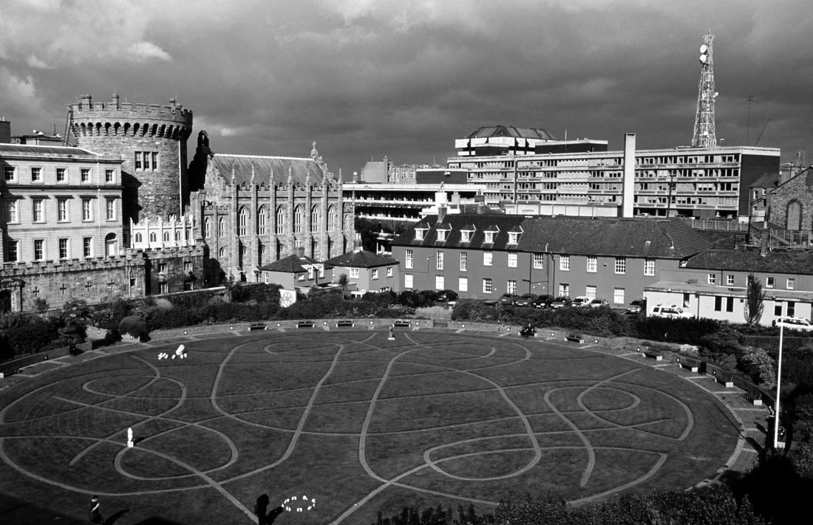
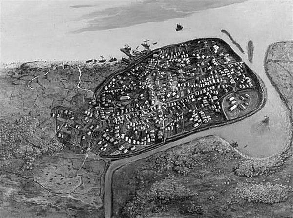
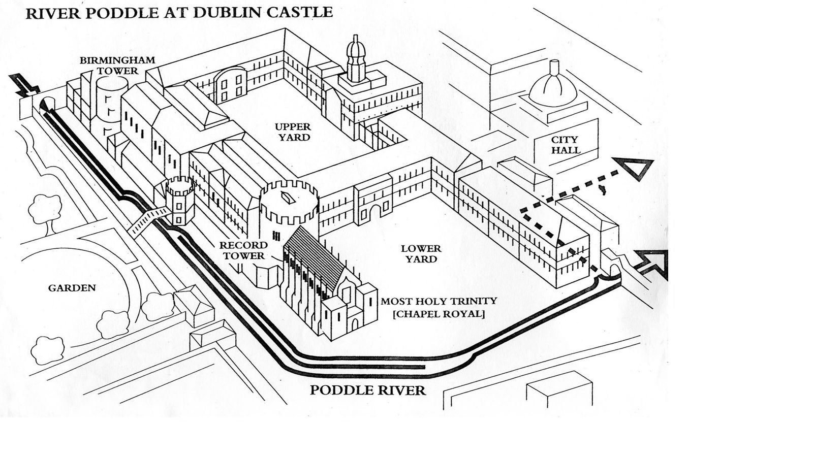

Stop 16 of 18 · Dublin Castle gardens
Dubh Linn
The black pool that gave the city its name.
Origin
The Dubh Linn, the black pool, was a pool on the Poddle just before it met the Liffey.
The tidal, salty Liffey was no good for drinking, so the fresh water of the Poddle was the main drinking supply for the settlement that became Dublin.
The pool may have been darkened by peat carried down from the hills. The Vikings who settled beside it called their town Dyfflin, from the Irish dubh linn. The pool itself lay under what are now the coach house and gardens of Dublin Castle.
Defence
As the city grew, the Poddle became a key defence on its southern side. The stream was channelled, and even dammed, to act as a moat. That dam is said to have given Dame Street, which now runs in front of Dublin Castle, its name.
The moat had its weak points. Red Hugh O’Donnell’s escape from the Castle in the winter of 1591 to 1592 is traditionally said to have gone by way of the moat. He did not go alone: two fellow prisoners, Henry and Art O’Neill, sons of Shane O’Neill, got out with him, and the three headed south into the Wicklow mountains in deep snow. Art died of exposure there, and Red Hugh lost both his big toes to frostbite. In 1881 the Freeman’s Journal reported the authorities blocking the Poddle outfall, described as the only underground way into the Castle. In 1961 a tunnel about seven feet high was found under the Upper Yard.
Dubh Linn today
Behind Dublin Castle, the site of the Dubh Linn is kept as a garden, a monument to its importance and the Poddle’s. The Dubh Linn Garden is bordered by the Chester Beatty Library, Dublin Castle and the Poddle, which now runs underground along its southern edge.
Two names for one city
The heritage chapter of the flood scheme’s environmental report says the name Dublin, from Dubhlinn, black pool, is generally taken to refer to the pool that lay directly south-east of the present Dublin Castle, on the south side of the Liffey.
It also notes a suggestion by the historian Clarke, in 1990, that Dubhlinn named an early Christian monastic settlement south of the pool. That would explain why the town has two names: Dubhlinn for the enclosed church settlement, and Baile Átha Cliath, the ‘ford of the hurdles’, for a secular settlement guarding the crossing.
Under the Castle yards
The river that once filled the Castle moat now runs in a brick sewer under the roads around it. When the Castle was made ready for a state reception in June 1932, visitors walked in by the Cork Hill gate over the line of the old ditch, with the Poddle still running underneath. On the garden side, a small footbridge from the State Apartments crosses the line of the moat into the grounds that were the viceroy’s garden after 1700.
Working in the river was dangerous. On 12 June 1913 John Roche, a labourer on the drainage works, had his right hand crushed while working in the Poddle in the Lower Castle Yard; blood poisoning followed. The Recorder awarded him £40 in compensation.
On 2 February 1961 workmen probing for rock under Cork Hill broke into a tunnel seven feet high, only two feet below the road, bricked up at both ends and with a gas main laid over it. People wondered whether it was part of the old moat. Inside were five tons of coal, thought to explain a coal delivery that had gone missing years before down a forgotten manhole.
From the planning file
Facts from the flood scheme’s planning application and four local planning files.
Poddle People
- Red Hugh O’Donnell: Escaped from Dublin Castle by the river
Parts of this page draw on research by the volunteers of the Crumlin and Walkinstown History Group, shared with poddle.ie. About their research.


